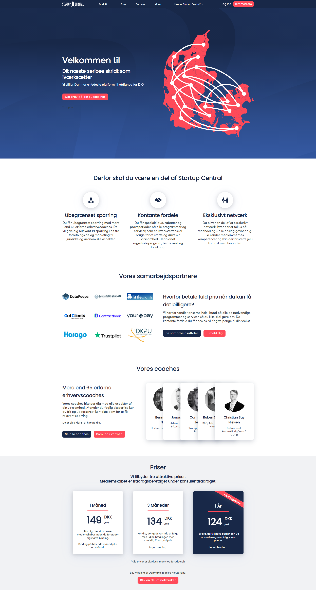
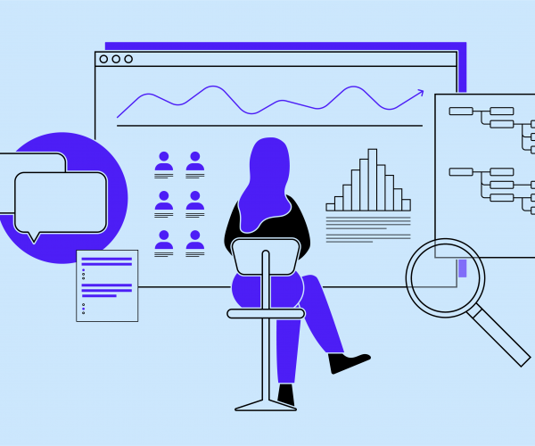
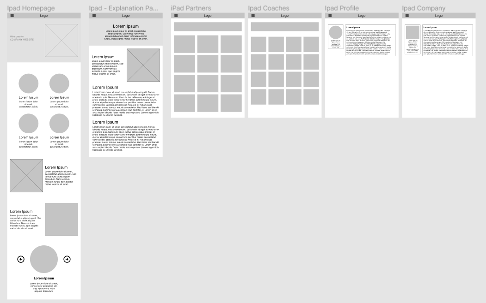
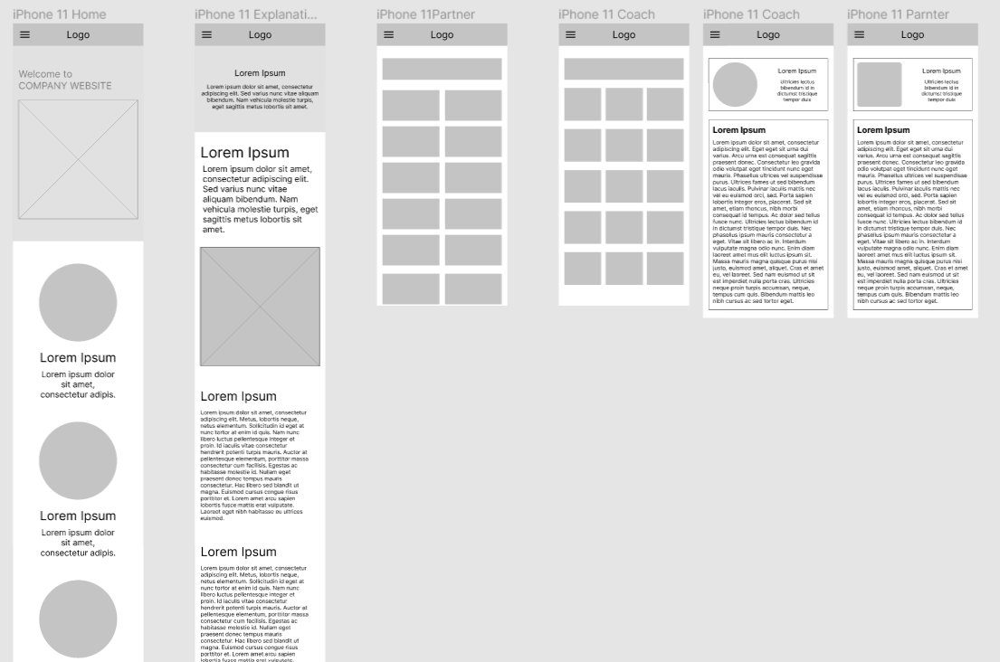
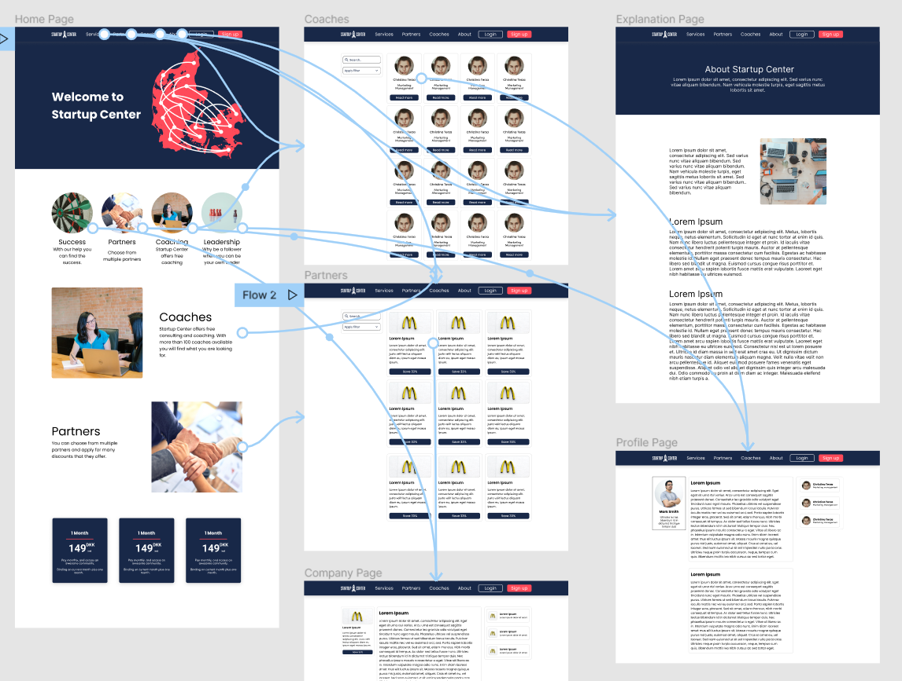

StartupCenter Redesign
Role UI Designer
Context Website Redesign
Period 2022 February - 2022 April
The Project
StartupCenter is a benefit club for entrepreneurs that focuses on client relationships and partner deals with other firms. The premise of the company is to create an online social platform where entrepreneurs can find help and information about starting and managing a business no matter whether they just want to start, or they have already started the process
The Problem
Starting your own company is a hard task.
Finding all the information to start your own business, shop, company etc. can be exhausting and
often people cannot seem to find the right sources. StartupCenter would like to create an
experience where the users can find all their information furthermore get coaching and benefits
from various partners.
The Goal
Design a responsive website to be user friendly. Create a user-flow that allows the user to find coaches for their liking, furthermore to find the best partners and discounts for their business ideas.
User research: summary

Interviews were conducted based on which empathy maps were created to understand the users.
This app aims to provide a user friendly experience. A primary user group identified through
research was the age group of 25-50 year old people who would like to start or they have already
started their business.
This user group confirmed that this generation is the one that is most likely will start their
own business
furthermore they want to have quick, easy and reliable information available.

Peter is a busy entrepreneur who wants to be able to find information about starting a business because he would like to start his own company.
“I have many ideas that could make me a millionaire, but setting up the company is the hardest part!”
Digital Wireframes
The goal was to make the website responsive, so it should be available on all devices.
Moreover the userflow should be easy to follow and the users should find the information that
they need easily.



Low-Fidelity Prototype
In the low-fidelity prototype I connected all of the screens involved into a primary user flow.
The user can choose the coach page, and from there he can go to the coaches' personal pages.
The same can be said for the partners, as it is easy to navigate back and forth for information.

The hardest challange
The company desperately needed a design system for easier implementations as
the company
strives to expand in the future.
This new design system will help in the extension of the company
Moreover Startupcentral needed to establish a new company color for easier brand recognition and a full color-palette that goes with it.
The designs have went through at least 30 iterations per screen. It is due to several reasons: Change in business direction, shift in product roadmap or simply to improve the user experience.
A snippet of the design system can be seen on the following image.
High fidelity prototype
The hi-fi prototype followed the same user flow as the lo-fi prototype. The changes made after the usability study, as well as several changes suggested by members of the team.

Takeaways from the project
The target audiance was happy about the re-design. They could find the information a lot easier than before. They also commented that the site was visually pleasing furthermore easyier to navigate than ever.
What I learned
I learned that making many iterations for a website is harder than I initially thought it would be. We have to Take screen sizes and gesturing on the site into consideration a lot more than we think.